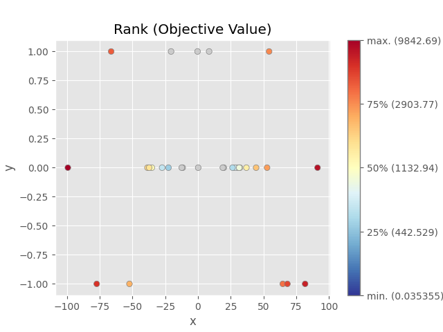

Note
Go to the end to download the full example code.
plot_rank
- optuna.visualization.matplotlib.plot_rank(study, params=None, *, target=None, target_name='Objective Value')[source]
Plot parameter relations as scatter plots with colors indicating ranks of target value.
Note that trials missing the specified parameters will not be plotted.
See also
Please refer to
optuna.visualization.plot_rank()for an example.Warning
Output figures of this Matplotlib-based
plot_rank()function would be different from those of the Plotly-basedplot_rank().- Parameters:
study (Study) – A
Studyobject whose trials are plotted for their target values.params (list[str] | None) – Parameter list to visualize. The default is all parameters.
target (Callable[[FrozenTrial], float] | None) –
A function to specify the value to display. If it is
Noneandstudyis being used for single-objective optimization, the objective values are plotted.Note
Specify this argument if
studyis being used for multi-objective optimization.target_name (str) – Target’s name to display on the color bar.
- Returns:
A
matplotlib.axes.Axesobject.- Return type:
Axes
Note
Added in v3.2.0 as an experimental feature. The interface may change in newer versions without prior notice. See https://github.com/optuna/optuna/releases/tag/v3.2.0.
The following code snippet shows how to plot the parameter relationship as a rank plot.
/opt/hostedtoolcache/Python/3.8.18/x64/lib/python3.8/site-packages/optuna/_experimental.py:31: ExperimentalWarning:
Argument ``constraints_func`` is an experimental feature. The interface can change in the future.
/home/runner/work/dash-docset-optuna/dash-docset-optuna/optuna/docs/visualization_matplotlib_examples/optuna.visualization.matplotlib.rank.py:33: ExperimentalWarning:
plot_rank is experimental (supported from v3.2.0). The interface can change in the future.
<Axes: title={'center': 'Rank (Objective Value)'}, xlabel='x', ylabel='y'>
import optuna
def objective(trial):
x = trial.suggest_float("x", -100, 100)
y = trial.suggest_categorical("y", [-1, 0, 1])
c0 = 400 - (x + y) ** 2
trial.set_user_attr("constraint", [c0])
return x**2 + y
def constraints(trial):
return trial.user_attrs["constraint"]
sampler = optuna.samplers.TPESampler(seed=10, constraints_func=constraints)
study = optuna.create_study(sampler=sampler)
study.optimize(objective, n_trials=30)
optuna.visualization.matplotlib.plot_rank(study, params=["x", "y"])
Total running time of the script: (0 minutes 0.499 seconds)